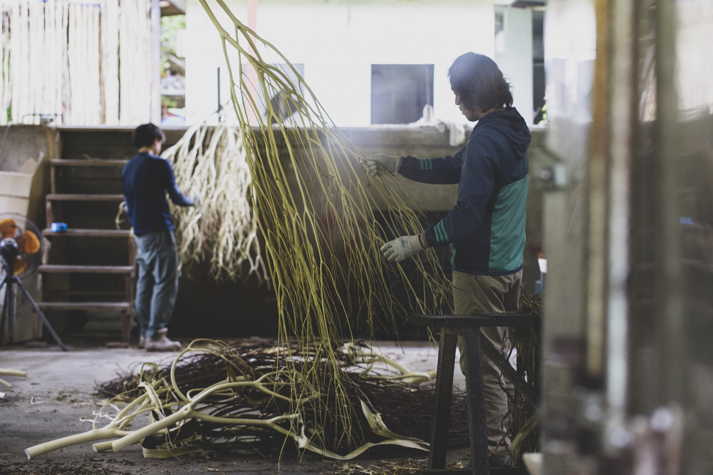

私たちの先祖が古くから親しみ、400年以上もの間、和紙として日本の歴史や美を支え続けてきた「みつまた」。この素晴らしい伝統素材の姿を、どうにか現代の私たちの日常に飾ることはできないか。その純粋な思いから、このプロダクトは生まれました。

製造工程は、一本一本、丁寧に職人の手で皮を剥くことから始まります。
実は、剥がした「皮」の部分は、紙幣の原料として国に納めています。現在、日本のお札に使われるみつまたの約90%がネパール産に依存しているのが実情です。しかし、「日本の顔であるお札は、できる限り国産の素材で作られてほしい」。私たちはそんな強い願いのもと、国内での生産と加工にこだわっています。

そして、皮を剥ぎ終わった後に残る、美しい「芯の木」。
通常は和紙づくりの過程で隠れてしまうこの部分を、一本一本手作業で鮮やかに染め上げました。